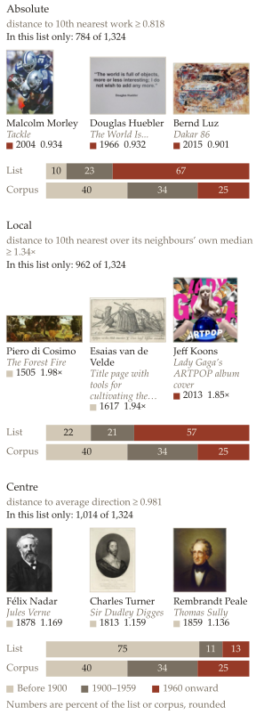
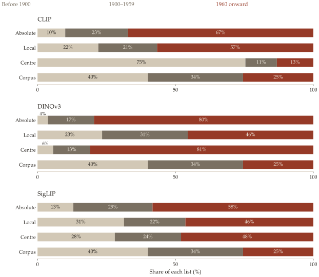
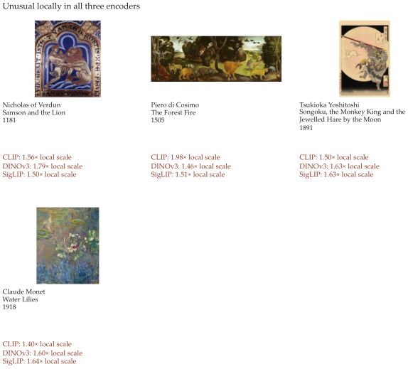
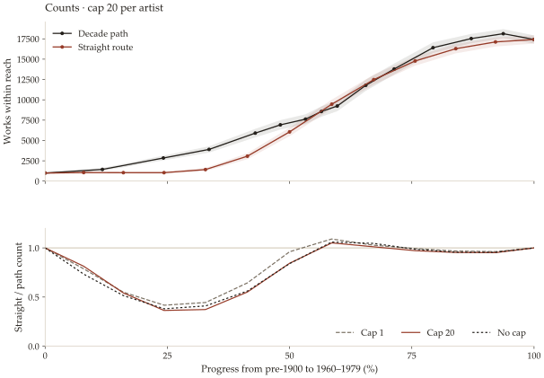

Q5 What does being far mean, and is it the same everywhere?
Q4 left each work with a leftover, the part of it a basis misses, and which works have a large one depends on the past we measure against. A leftover is about directions, though, and the search will read how new a picture is as a distance, i.e., how far it sits from the works before 1900. So this page asks 2 things about the works as points. How far apart do they sit, and does far mean the same everywhere in the cone (the first half of this page)? And is a work better described as one point, or as a mix of a few centres of the corpus (the second half)?
Every distance on this page is the chord, i.e., the Euclidean distance between 2 works’ unit vectors, and it puts a work’s neighbours in the same order as cosine similarity does. We tested two other usual distances in all 3 encoders, Mahalanobis (each direction scaled by how much the works spread along it) and a diffusion distance (steps along the links between nearest works). Both change who a work’s neighbours are, but neither puts works of the same style, genre or artist among a work’s nearest more often than the chord does by more than 0.01, in any of the 3 encoders. For e.g., in CLIP about a quarter of a work’s 10 nearest share its style under the chord, against about a sixth under Mahalanobis over all directions. So we keep the chord.1 The search scores its pictures by the chord too (Q7). We look at far in 3 steps:
- For every work we take three distances that could each mean far. The absolute one is the distance to its 10th nearest work, of any date and by any artist. The local one is the absolute distance divided by the median of the same distance over its 10 nearest works, i.e., how far the work is for where it sits. The centre one is the distance to the corpus’s average direction (Figure 1).
- We compare the three lists of the farthest 1%.
- We check whether the way from the older works to the 1960s runs empty: we walk from the average direction of the works before 1900 to that of the 1960s and 70s, count at each point the works within reach (as near as a typical work’s 10th nearest work by another artist), and compare with the corpus’s own path through the decade averages at the same fraction of the way.
![Three panels, one artwork each, drawn to one scale. Absolute: Burhan Dogancay, Ice Hockey, 1993, inside a ring of radius 1.071 to its tenth nearest work, with the corpus median ring 0.599 solid and the 99th percentile 0.817 dashed. Local: Piero di Cosimo, The Forest Fire, 1505, inside its ring of 0.751 among ten smaller rings of its neighbours, median 0.379, ratio 1.98. Centre: Charles Alston, Dr. Charles Hawkins, 1943, at 73.7 degrees from the average direction on a side view of the sphere, with the median 42.3 and 99th percentile 58.8 degree latitudes marked. Neighbour positions and the side of the pole are drawn, not stored.](figures/q5_three_far.svg)
A. In CLIP, far means 3 different things. In CLIP the three lists of the farthest 1% share about a quarter at most (Figure 3).2 The absolute distance flags recent works, photographs, posters and installations, the centre distance old works,3 and the local one sits between the two in date.
So which distance we use decides what a search will call new. The absolute one ranks Piero di Cosimo’s Forest Fire (first by the local kind, odd mainly among its own nearest works) high but outside the top 1%.4

Compare the 3 encoders and list overlaps

Works far from their neighbours in all 3 encoders

B. In CLIP, a straight walk from the older works toward the 1960s never runs empty. At every point about a thousand works or more are within reach. For its first stretch the walk has a third to two thirds as many works within reach as the corpus’s own path (Figure 6).5 From a little past halfway the two are level.
![Side view drawn to measure. A straight walk 0.528 long runs left to right from the centre of the works before 1900 to the centre of 1960 to 1979. Above it the decade path bows up through the centres of the 1900s to the 1950s, up to 0.267 off the line at the 1910s, and comes back down to the end. Each route is a band whose width is the number of works within reach: the straight band stays at about 1,000 to 1,400 for its first third and widens after 40%, while the path widens from the start. Decade centres sit at measured progress and distance from the line; points between centres sit on the drawn segments. A thick stretch marks where each work is the nearest. Nearest actual works along the path: Edward Mitchell Bannister 1899, Richard Gerstl 1908, Salvador Dalí 1923, Mario Sironi, Mario Cesariny 1968, Roger Bissière. Along the straight walk: Rudolf Ernst, Edward Mitchell Bannister 1899, Mario Sironi, Gerhard Richter 1976. Adam Elsheimer 1608 is nearest at the start and Theodoros Stamos 1973 at the end of both routes. With scripts on, two dots walk the routes together and the nearest work on each is shown beside a slider.](figures/q5_route.svg)
Counts, uncertainty and the straight-to-path ratio

Is far the same everywhere? In CLIP the typical spacing is nearly the same over time, as a work’s median distance to its near neighbours barely moves from the 1500s to the 2000s. It is not the same across kinds of work, as photographs sit farther apart than yakusha-e prints (like Sharaku’s of 1794, Figure 7).6 We also notice that 33 works are in the farthest 1% by the local distance in all 3 encoders (Figure 4).7
The search uses a version of the absolute kind, as only that kind says a work has few others around it. It takes the mean distance to a work’s 15 nearest works, where this page takes the 10th nearest (Q7).8
![Left, three lines give the median distance to the tenth nearest work in each decade from 1500 to 2020: CLIP stays between 0.54 and 0.63, DINOv3 falls from 0.57 to 0.48 in the 1780s and rises to 0.73, SigLIP rises from 0.62 to 0.74; lines break where decades have fewer than 50 works, and levels compare within an encoder, not across encoders. Right, on the same distance scale, a strip of CLIP genre medians for genres with 200 or more works, from yakusha-e at 0.44 to photo at 0.71: the six lowest and six highest are marked and the unstored middle is dashed, beside a red bracket for the range of CLIP decade medians. Thumbnails of Tōshūsai Sharaku, Nakamura Noshio II as Konohana, Daughter of Ki no Tsurayuki, 1794, and Edward Weston, Mushroom, 1940, are examples of the two end genres, not plotted positions.](figures/q5_spacing_strip.svg)
Is a work one point, or a mix of a few centres of the corpus?
A work could also be a mix of a few parts of the corpus, and then a new work could be a new mix of old parts. We tested this in CLIP with lumps, the centres of groups of works that point the same way from the corpus’s average.9 In CLIP up to 3 lumps, added one at a time, account for about a third of a typical work. Fitted on works before 1900, they account for less of a later work. That is about a third of an older work against about a fifth of a later one, and mixing them helps the later works no more than the older ones.10 The test of up to 3 lumps and its figure are in the appendix.
So the other works, through 32 directions or up to 3 lumps added one at a time, account for about half of a work or less, and what is left over depends on the past we measure against. For its score, DuROOM search takes one thing from these pages, the absolute kind of far. The leftover and the shift (the way the later works lean on average, Q3) are read on its pictures after the run (a search scored by the leftover instead is in the appendix). They give the search no map of the manifold, as nothing here says whether a vector is on or off the manifold or whether the region has holes. So the search has to paint a place to learn how far it is. Next, Q6 asks how real works after 1900 score on this kind of far.
Footnotes
In CLIP the shares of the same style, genre and artist are 0.250, 0.549 and 0.201 under the chord, with one work per artist as the query (Q1’s 0.34 for the artist counts every work and its 15 nearest). They are 0.165, 0.410 and 0.141 under Mahalanobis over all directions, 0.229, 0.528 and 0.179 over the leading directions, and 0.247, 0.553 and 0.119 under diffusion after 1 step (0.246, 0.555 and 0.117 after 8). The rule for reading this: a distance is ahead of the chord on a measure when it is more than 0.01 higher with a 95% interval off zero. By this rule no other distance is ahead in any of the 12 comparisons (the three shares and the agreement with the other 2 encoders, in each of the 3 encoders). All of this is about the neighbours of real works, so it does not show which distance a search should score.↩︎
The absolute and local lists share 26% of their top 1% in CLIP, 12% in SigLIP and 6% in DINOv3. The absolute and centre lists share 35% in DINOv3 and 51% in SigLIP. The local and centre lists share a twentieth to a tenth.↩︎
Of the three lists, only the centre list reverses its era between encoders, although all 3 lists differ by encoder. In CLIP 87% of the works farthest from the centre are from before 1960. In DINOv3 81% are from 1960 on.↩︎
The Forest Fire is far mainly by the local kind, among its own neighbours. Its distance to its 10th nearest work is 0.751, which is in the top 3.7% in CLIP. By the local score it ranks first of 132,473.↩︎
At each point we count the works within reach on the straight walk and on the corpus’s decade path, and take the first count as a share of the second. Between 16% and 41% of the way the share is 0.36 to 0.64. At the midpoint it is 0.84 to 0.96, and from 59% of the way on it is 0.95 to 1.09. The counts depend on the reach: with a slightly smaller one the share over the first stretch drops to about a fifth. So B is not a claim about gaps in general.↩︎
The median distance to the 10th nearest work, among works of any date, barely moves with the era in CLIP. It is 0.58 in the 1500s, its lowest decade (0.54) has 89 works, and it is a little higher after 1980. In SigLIP it rises from 0.62 to 0.74. In DINOv3 it falls from 0.57 to 0.48 and then rises to 0.73. Counting only neighbours from the same decade, CLIP’s distance steps up about 10% after 1800.↩︎
Four of the 33 are shown: Nicholas of Verdun’s Samson and the Lion (1181), Piero di Cosimo’s The Forest Fire (1505), a Yoshitoshi print (1891) and Monet’s Water Lilies (1918). Across the 3 encoders, each sits 1.4 to 2.0 times as far from its 10th nearest work as its neighbours typically sit from theirs. We have not looked at them beside their neighbours.↩︎
Three near-neighbour distances on these pages are nearly the same size. The spacing in Q1 leaves a work’s own artist out, and its median chord is 0.62 in CLIP, over the 132,473 dated works. The walk’s reach in B is the same distance over all 172,171 works, and its median is 0.61. The absolute distance here keeps the artist in, and its median is 0.60.↩︎
We do not check that a lump is a movement.↩︎
We do this both ways round and for three splits, so there are 6 runs. At 32 lumps, up to three old lumps explain 33.9% of a typical older work and 22.2% of a typical later one, as the median of the 6 runs. Mixing helps the later works less than the older ones, by 0.2 to 1.4 points at 32 lumps and 0.5 to 2.0 at 64. We count it as less only when it is at least a point lower in all 6 runs, so we say it helps them no more than the older ones.↩︎